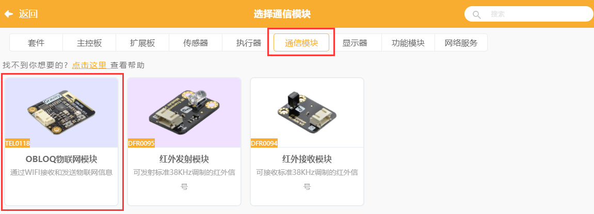
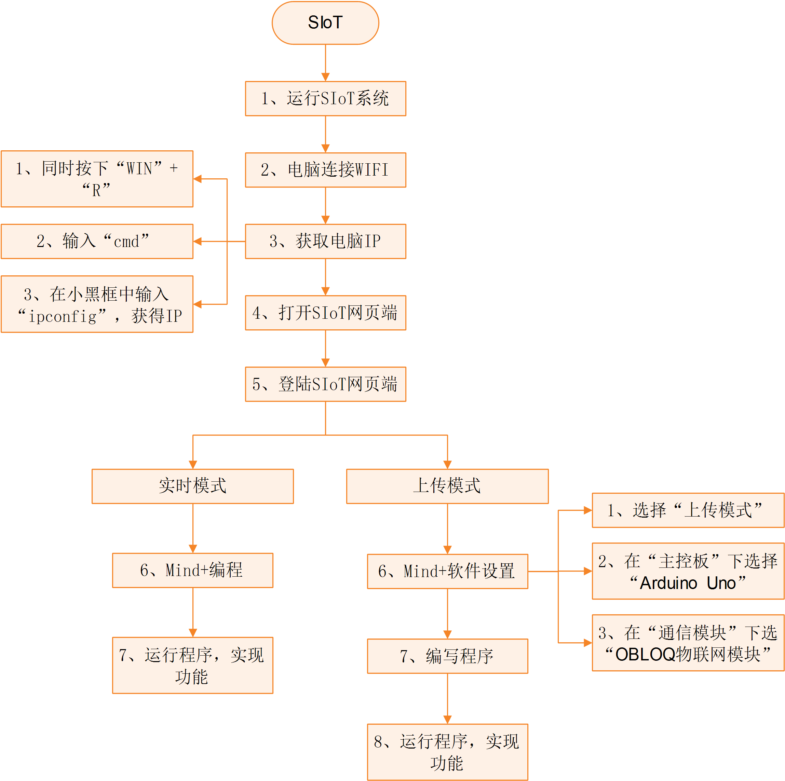

5. Arduino¶
Arduino是一款便捷灵活、方便上手的开源电子原型平台。在创客眼里，Arduino是一个造物的神器，基于Arduino设计的创客作品不计其数。
5.1. OBLOQ模块介绍¶
OBLOQ是一款基于ESP8266设计的串口转WIFI物联网模块，用以接收和发送物联网信息。接口简单，即插即用，适用于3.3V~5V的控制系统。OBLOQ物联网模块当没有连接wifi的时候，OBLOQ指示灯显示红色，正在连接wifi时显示蓝色，连接到wifi后，OBLOQ指示灯显示绿色。
OBLOQ物联网模块引脚说明：

关于OBLOQ物联网模块的介绍： http://www.dfrobot.com.cn/goods-1577.html
5.2. 典型案例¶
本案例将Uno板应用在家居物联网中，将温度传感器与Uno板连接，用于采集室内的温湿度数据，并将数据上传到SIoT中，结果将以数值与折线图的形式展现，便于主人监测室内温湿度的变化情况。
所需材料：Uno板，温度传感器，OBLOQ物联网模块
使用软件：Mind+（所有代码可以转成）
STEP1 Mind+软件设置
1、打开Mind+软件（1.5.5及以上版本），选择“上传模式”：
STEP2硬件连线图
OBLOQ模块：TX、RX、GND和VIN引脚分别连接到D10、D11、GND和VCC引脚。
温度传感器LM35：A0引脚。

可通过修改程序来自定义相关引脚。
STEP3编写程序

STEP4功能实现
Uno板在下载完程序后，OBLOQ物联网模块指示灯显示为绿色，表示成功与Uno板连接成功正常工作。
程序运行时，若无法连接OBLOQ物联网模块（指示灯不为绿色），先检查参数有没有填错，例如ip错误、Topic中有没有斜杠，依旧无法连接的话，可尝试关闭电脑防火墙，重新上传程序；若依旧不成功需要查看OBLOQ模块的接线对应的管脚是否连接正确。
打开SIoT网页端，可以在“设备列表”下看到对应的Topic信息。

1、点击上图中“a”后的“查看消息”，可以看到温度传感器实时收集的温度值。
2、点击“b”后的查看消息
在弹出窗口中发送消息“ON”，可以看到Uno板子的LED被点亮。

同理，发送消息“OFF”，可以看到Uno板子的LED被点亮。
5.3. 操作流程归纳¶
Arduino和SIoT互联的一般过程图示。
5.4. 物联网框图¶
以路由器建立无线局域网为例，通过下面这张图可以说明SIoT的作用原理。
在一台电脑上建立SIoT服务器后，其他设备在知道路由器分配给这台电脑的IP地址后，可以利用WIFI访问SIoT服务器。这些设备可以是电脑、手机、Uno板等。

5.5. OBLOQ模块的常见问题¶
- OBLOQ指示灯一直显示蓝色：
表示OBLOQ正在连接wifi，需要一定时间，如果超过一分钟依然显示蓝灯，则可能为wifi账号密码设置错误，请检查程序 。
- OBLOQ指示灯一直显示紫色：
表示OBLOQ的wifi连接成功但是mqtt异常断开，尝试检查所在wifi是否断网，也有可能easyiot服务器问题，等待一会儿再连接或联系论坛管理员。
- OBLOQ指示灯一直显示红色：
表示OBLOQ的wifi连接不成功，尝试检查是否tx和rx接反了（调换一下tx和rx接线顺序），或者是wifi有问题（使用手机开热点，不要用中文WIFI名称），然后就是参数有没有填错（物联网网站里面的参数）。
需要了解更多细节请参考： http://mc.dfrobot.com.cn/thread-281129-1-1.html